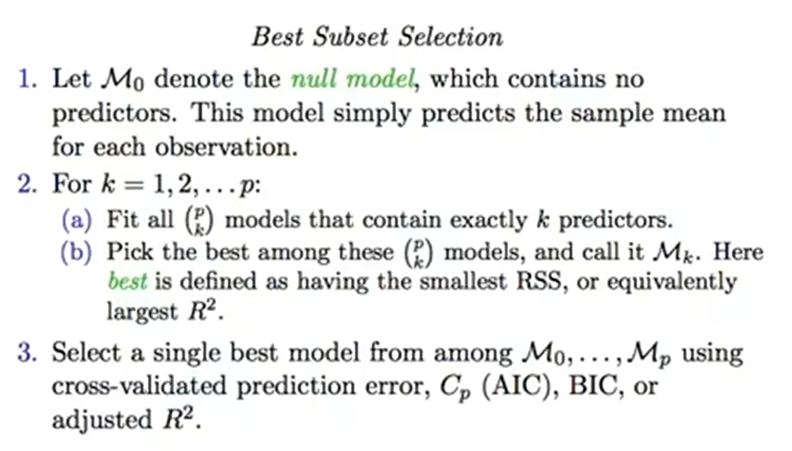
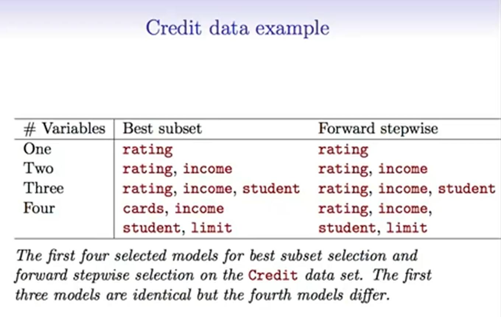
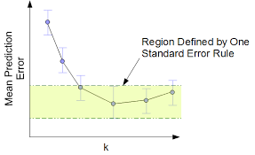
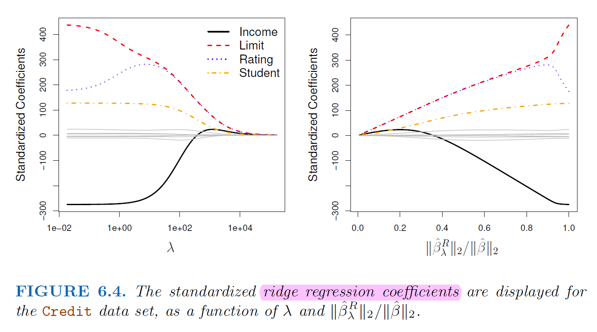
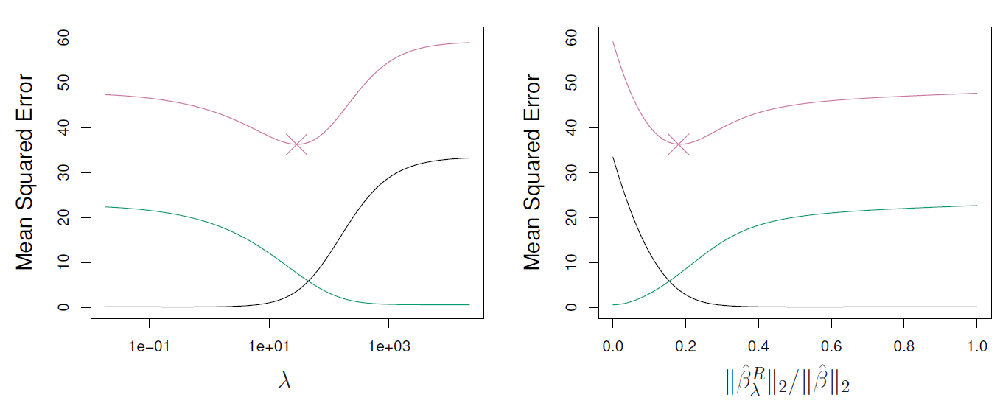
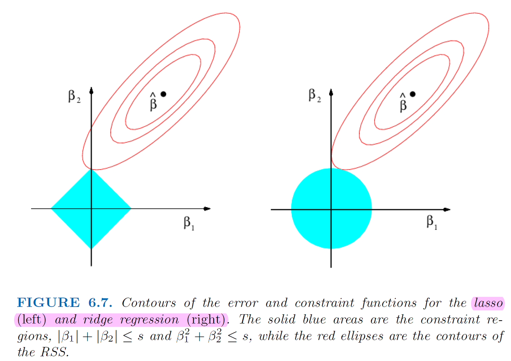
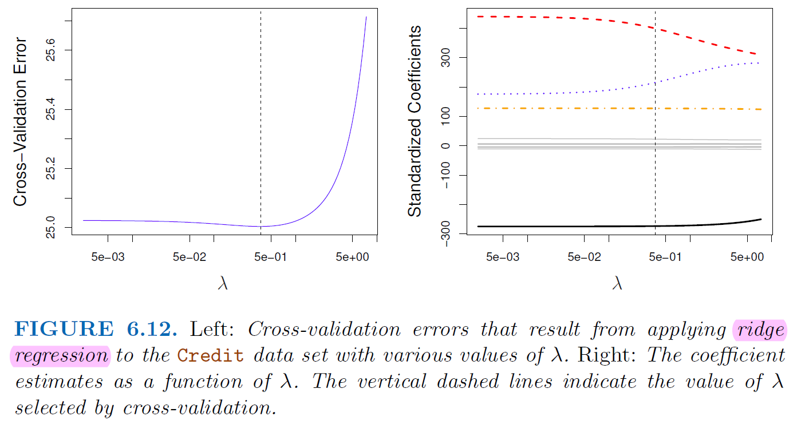
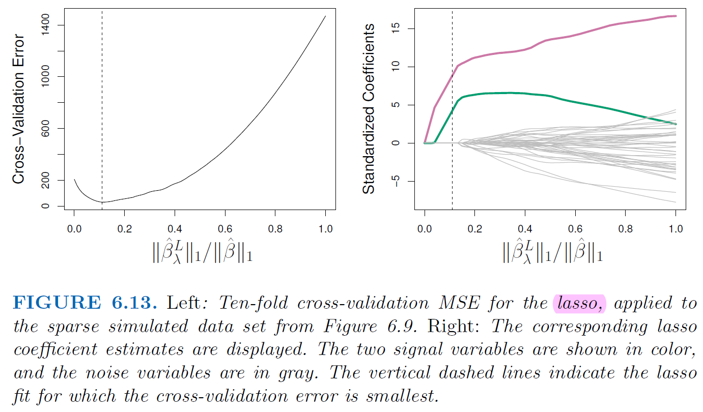

5. Model Selection#
5.1. We Need Model Selection#
Model selection is essential because it helps us choose the most appropriate model among a set of candidate models.
In the case of linear models, such as linear regression, there are often multiple ways to specify the model, including
Different combinations of predictors, polynomial terms, and interaction terms
Selecting the best model ensures that our model performs well on unseen data and avoids
overfittingorunderfitting.
5.2. Three classes of methods#
5.2.1. Subset Selection#
Subset selection involves identifying and selecting a subset of predictors from a larger pool of variables.
Model selection should use \(C_p\), \(AIC\), \(BIC\) or
deviance. Using \(RSS\) or \(R^2\) is inappropriateDeviance: negative two times the maximized log-likelihood
There are two main approaches to subset selection:
Best Subset selection
Computational expensive

Forward and Backward Stepwise Selection
Forward and backward stepwise selection are iterative approaches that start with either no predictors (forward selection) or all predictors (backward selection) and sequentially add or remove predictors based on certain criteria until the optimal subset is found.
Approximate function, do not guarantee the best model

5.3. Estimating test Error#
We can indirectly estimate test error by making an adjustment to the training error
\(C_p\), \(AIC\), \(BIC\), Adjusted \(R^2\)
Adjusted \(R^2\) = \(1-\frac{RSS/(n-d-1)}{TSS/(n-1)}\)
\(d\) is the number of predictors
Not generalized to other model like logistic regression, not that strong theory support
We can directly estimate the test error using either a
validationset approach orcross-validationapproach.
5.3.1. One-standard-error rule#
Calculate the mean and standard error \(\sigma^2\) of the estimated test MSE
Select the model with smallest \(k\) for test MSE within one standard error

5.3.2. Shrinkage Methods#
Shrinkagemethods, also known asregularizationtechniques, penalize the coefficients of predictors to discourageoverfittingand improve the generalization ability of the model.Shrinkage methods are computationally efficient and can handle a large number of predictors.
Lasso regression, in particular, performs variable selection by setting some coefficients to zero, leading to sparse models.
5.3.2.1. Ridge Regression#
Add penalty of coefficients to RSS $\( RSS = \sum_{i}^{n}(y_i-\beta_0-\sum_{j=1}^{p}\beta_jx_{ij}) \)$
Ridge Regression want to minimize
\(\lambda > 0\) is a tuning parameter
\(\lambda \sum_{j=1}^{p}\beta_j^2\) called a shrinkage penalty
It’s small when coefficients are small, it shrinking the estimates of \(\beta_j\) towards zero
Since the penalty is squared of coefficients, the estimates of ridge regression is scale sensitive
It’s best to apply ridge regression after standardizing the predictors
Ridge regression push coefficients toward 0 but never set them to 0 $\( RSS + \lambda \sum_{j=1}^{p}\beta_j^2 = \sum_{i}^{n}(y_i-\beta_0-\sum_{j=1}^{p}\beta_jx_{ij}) + \lambda \sum_{j=1}^{p}\beta_j^2 \)$


5.3.2.2. Lasso Regression#
Similarly, add penalty of coefficients to RSS but using absolute value
In statistical parlance, the lasso use an \(l_1\) penalty instead of an \(l_2\) penalty.
\(l_1\) has the effect of forcing some of coefficient estimates to be exactly 0. Therefore, lasso yields sparse models, that is, models that involve only a subset of variables.
Lasso Regression want to minimize $\( RSS + \lambda \sum_{j=1}^{p}|\beta_j| = \sum_{i}^{n}(y_i-\beta_0-\sum_{j=1}^{p}\beta_jx_{ij}) + \lambda \sum_{j=1}^{p}|\beta_j| \)$


5.3.3. Why lasso gives us the 0 estimates#

5.3.4. Parameter Tuning of Lasso and Ridge#
Since we are push coefficients to 0 to product a spare model, use \(C_p\), \(AIC\), \(BIC\) might not a good idea
Use cross-validation provides a simple way to tackle the
unknown number of predictorsproblem
